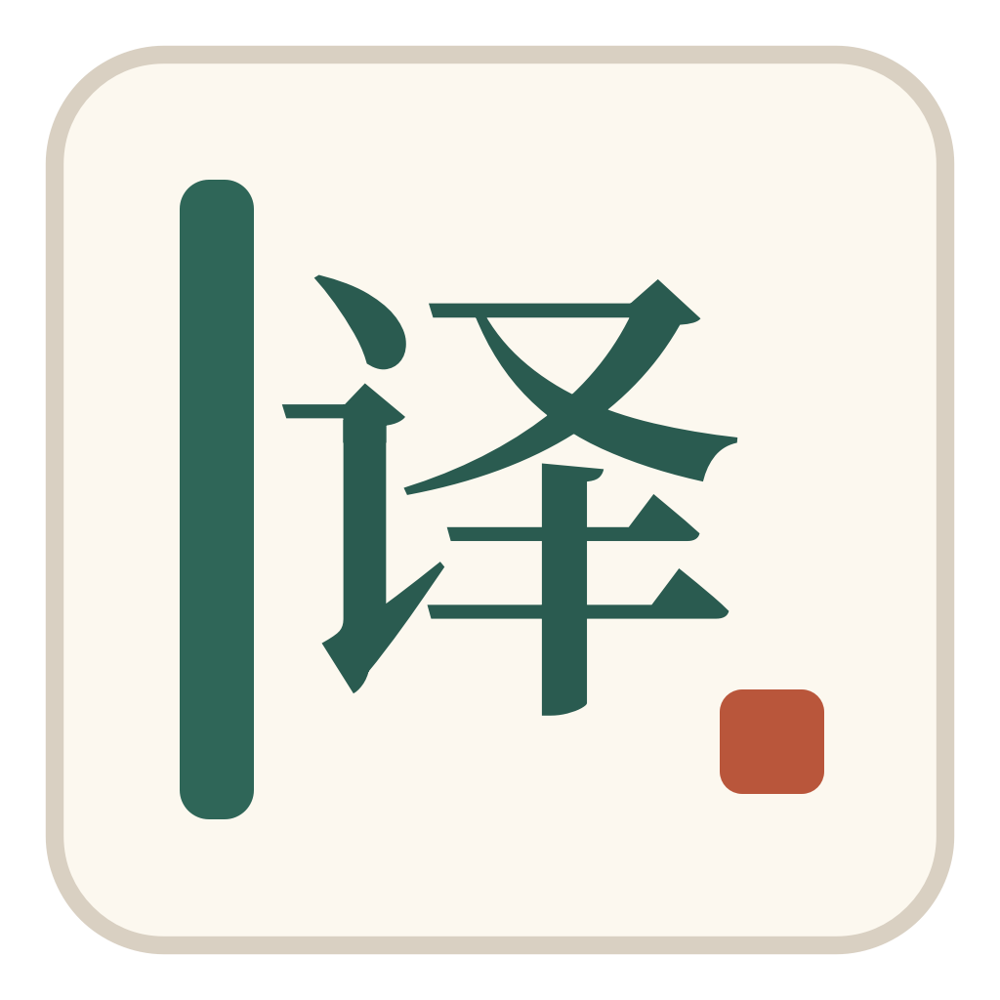
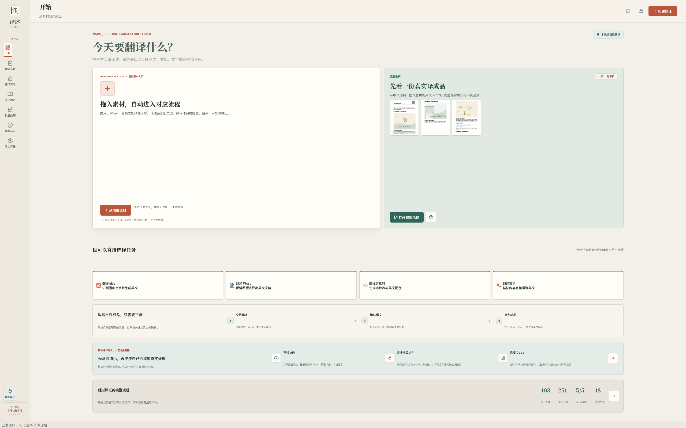
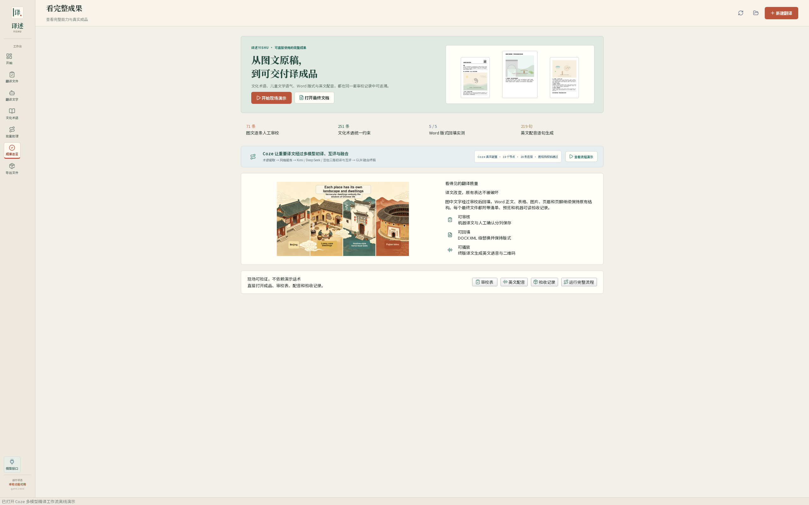

翻译图片
识别图中文字，生成中英对照，并连接图文回填成品。
71 条人工审校记录
译述 YISHU 下载 Windows 版
CULTURE TRANSLATION STUDIO
译文字，也译语境。
离线即可演示完整生产链；连接你自己的模型 API 后，文字、图片、Word、 音视频与 Coze 多模型精译都能进入真实在线处理。
PRODUCT TOUR · 02:40
从首页开始，依次进入多模态文件、Coze 多模型精译、术语库、批量流程与最终导出。 讲解与画面均来自真实软件。
START WITH THE MATERIAL
每个入口都说明当前步骤、在线能力和最后能拿到的文件。
识别图中文字，生成中英对照，并连接图文回填成品。
71 条人工审校记录提取正文、表格与页眉页脚，审校后保持原版式回填。
5 / 5 份版式实测识别、逐句翻译、人工审核，再生成英文配音和二维码。
219 句配音生成结合文化术语与儿童文学风格，输出可人工确认的译文。
251 条术语约束CHOOSE A REAL TASK
这是桌面端真实操作逻辑的交互导览。切换任务即可看到模型在哪里工作、人工在哪里确认，以及最后导出什么。
可补充标题、读者年龄、语气和使用场景。
REAL PRODUCT · REAL DATA
切换标签查看新版高清实机截图。界面、数据和按钮都来自当前可下载的 Windows 程序。
图片、Word、音频或视频都可以直接选择，完整示例与真实成果在首页即可打开。
COZE MULTI-MODEL WORKFLOW
核心精译能力它先识别文化术语和目标文体，再让 Kimi、DeepSeek、豆包分别初译与互评， 最后由 GLM 融合终稿。无 Token 时可完整演示，连接 Coze 后就在同一入口真实在线运行。
从统一术语库读取文化概念的推荐译法。
识别儿童文学读者、语气、节奏与朗读要求。
降低单一模型偏差，比较准确性与自然度。
输出可进入人工审校表的英文译文。
VERIFIED DELIVERY
每种能力都对应真实文件、人工审校记录和自动验收证据，老师可以直接打开检查。

READY TO USE
OPEN SOURCE · WINDOWS READY
下载 Windows 完整包，解压后双击 Yishu.exe；左下角“模型接口”可连接 OpenAI、Ollama、LM Studio 或其他兼容服务。